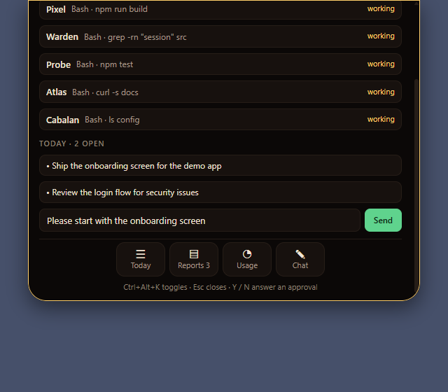

Windows app for Claude Code users
A pixel office for your own Claude Code agents.
Tiro, a little orange cube-crab, is the office manager. Give Tiro a task. It plans the work, asks you before it hires a specialist and files reports into plain Markdown notes. The office itself spends no tokens.

- No tokens for the office itself
- You approve every hire
- Local only: 127.0.0.1
- Signed updates
- No cookies, no trackers
How it works
You stay in charge of every step that matters.
- Give Tiro a taskType it in the dispatch box. It lands on today's board as a goal.
- Approve the hireTiro asks for the specialist it needs. One approval buys exactly one hire.
- Agents work, you watchPrompts that Claude Code would show you appear in the dashboard and the island.
- Read the reportFindings are filed as reports, and each agent keeps notes for the next task.
A tour of the office
Everything runs locally on top of the Claude Code you already have. Your settings, permissions, hooks and MCP servers apply unchanged.
You approve every hire
Tiro cannot hire on its own. A card shows the goal and the reason. One approval buys exactly one hire, tied to the first prompt, and expires after 10 minutes.

The dynamic island
A notch-style overlay with live agent status, approvals, quick actions, now playing with synced lyrics and themes. Answer a prompt with Y or N without leaving your work.

Reports and a Markdown vault
Findings are filed as color-coded reports with PDF and Excel export. Notes, memory and SOPs are plain Markdown in your own vault.

Memory and history per agent
Every task starts in a fresh context. Each agent keeps its own notes, and the Agent history overlay lets you browse past tasks and summaries.

Breaker box and Security Guard
Hard switches for Tiro, autopilot, hiring and terminal approvals, plus a subscription guard that stops at your plan limit instead of spending extra-usage credits. The ask-only Security Guard asks before secrets leave your computer or a downloaded script runs.
What the Guard asks about
- Secrets leaving this computer
- Downloaded scripts and persistence
- Credential stores
- Untrusted instructions in web or mail text
Meet Tiro and the team
Tiro leads a fixed team of eight specialists, at most eight working at once. Tiro runs on Sonnet at medium effort and picks Haiku, Sonnet or Opus for each hire. Its mood follows the work.

Pixel
Frontend engineer
sonnet
read, web, Bash, Edit, Write
Forge
Backend engineer
sonnet
read, web, Bash, Edit, Write
Warden
Security reviewer
opus
read-only (+ web, Bash)
Probe
QA and test engineer
sonnet
read-only (+ web, Bash)
Atlas
Deep researcher
opus
read-only (+ web, Bash)
Cabalan
Researcher
haiku
read-only (+ web, Bash)
Tally
Task checker and organizer
haiku
Read, Grep, Glob, Edit, Write
Scribe
SOP and document writer
sonnet
read, web, Edit, Write
Security model
Built so that an agent working for you cannot approve its own requests. Read the full model or the permissions page.
Local only
The server binds 127.0.0.1 and rejects any other Host header. The UI key stays in the app process and an HttpOnly cookie, so an agent cannot approve its own requests.
Strict CSP
Pages load scripts, styles and fonts only from the app itself. React, Babel and the fonts are vendored, so nothing loads from a CDN.
Hardened windows
Context isolation and sandbox on, no Node integration, navigation locked to the local server, webviews blocked.
Verified updates
The updater accepts only a release manifest with a valid Ed25519 signature from the key pinned in the app, and checks the installer SHA-256 twice before it runs.
Approvals stay yours
Tool permissions are Claude Code's own. What would ask you still asks you. Nothing is auto-approved or timed out into an answer.
Security Guard
An ask-only layer that watches for secrets leaving the machine, unwanted scripts and persistence, credential stores and untrusted instructions. A safety net, not a boundary. How it works.
FAQ
Does the office cost tokens?
No. Only agents that are working cost tokens, and only on your Claude Code plan.
Which systems does it run on?
Windows 10 or later today. macOS and Linux builds are not published yet.
Do I need Claude Code?
Yes. Install Claude Code and log in once by running claude. Agent Office uses your own install and plan.
Can an agent hire without asking me?
No. Every hire needs your one-shot approval, which expires after 10 minutes and is cleared when Tiro's session ends or resets.
Why does Windows warn me when I install it?
The builds are not code-signed. SmartScreen may show a warning, and Windows 11 Smart App Control can block unsigned installers. Compare the installer's SHA-256 first. See the download page.
Where is my data?
On your machine: ~/.claude/agent-office, your vault and Claude Code's own ~/.claude/projects. Model calls go to Anthropic through Claude Code, as in the terminal.
Does it read my email?
No. The scheduler reads a local feed file that you must produce yourself.
Does this site track me?
No cookies and no consent banner. See the privacy page.
More answers are on the troubleshooting page and the FAQ.
Put Tiro to work
Windows 10 or later and Claude Code, logged in. Takes a few minutes.
Licence
Agent Office is proprietary software. All rights reserved. Nobody else may use, copy, modify, publish or distribute it unless the owner gives permission in writing. The installer shows the licence text before installing. The text is a plain-English draft that has not yet been reviewed by a lawyer. Earlier versions published under the MIT licence (1.1.0 to 1.1.4 and 1.2.5) stay available under the terms they were released with. Third-party components keep their own licences, listed in the notices that ship with the installer.
Not affiliated with Anthropic: Claude and Claude Code are Anthropic products, and Agent Office runs on your own Claude Code install and plan.